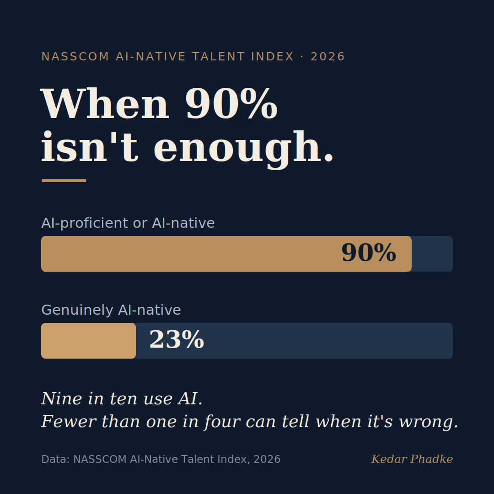

When 90% Isn't Enough
This month, NASSCOM released its first AI-Native Talent Index, which looks at India's early-career tech workforce. The headline sounds reassuring: nine out of ten early-career tech professionals are now either AI-proficient or AI-native.
But the second number matters more. Only 23% are truly AI-native.
That gap is the biggest question in AI education today: are we building tool users, or people who can truly work with AI?

The Index Is Measuring Something Different
NASSCOM's AI-Native Talent Index is different from a typical tool-adoption survey. It looks at eleven areas. Some are expected, like fluency and orchestration. Others are tougher, such as judgment, thinking independently, and using AI responsibly. The main issue is clear: AI is taking over routine technical tasks, and early-career professionals are missing the hands-on practice that builds technical judgment. Being able to spot a convincing but incorrect AI answer often comes from having worked through the problem yourself.
Deep engineering skill is one of the weakest areas measured by the Index, and the report warns that it could fade as AI takes over the routine work that used to build it.
The Curriculum Is Solving the Wrong Problem
Most management and engineering programs reacted to the rise of AI by adding new modules, like prompt engineering, GenAI electives, and tool walkthroughs. These changes are not bad, but they mostly solve the 90% problem, tool adoption, while the 23% problem of true AI-native skills remains largely unaddressed.
The method is already in our classrooms. It just needs to be aimed at the right goal.
NASSCOM focused on technology and engineering talent, like final-year engineering students and early-career professionals. But this pattern is not limited to them. The same gap appears in any program where tools are advancing faster than the judgment needed to use them well, including management education.
The real skill in short supply, which NASSCOM measures in its tougher areas, is diagnostic reasoning. This means being able to spot when an AI output is wrong and adjust it to fit situations the model was not designed for, even if the answer seems correct.
A certification cannot measure this skill. It develops through case analysis, tough problem sets, and real project work, the things management and engineering education already do well. The method is already in our classrooms; it just needs to be aimed at the right goal.
The Gap Only Shows Up on the Job
On paper, "AI-proficient" and "AI-native" seem almost the same. Both include AI coursework and can show AI-generated work in a portfolio. The real difference shows up when things do not go as planned, when the tool faces an unusual case, or when a decision truly matters. That is when the gap becomes visible.
How the Best Firms Are Responding
The firms that take this seriously are not waiting for universities to catch up. They are changing their graduate programs. Instead of giving juniors the routine work that AI now handles, they put juniors directly into AI-assisted workflows. Juniors test, correct, and improve what the model produces, working alongside senior engineers on judgment calls. SignalFire's talent researchers call this the AI apprenticeship. Entry-level jobs are shifting from doing basic tasks to supervising the machine, which is the skill NASSCOM found lacking.
Two strategies keep coming up. First, juniors work with senior engineers to review AI's output together, so they learn to spot answers that seem right but are actually wrong. Second, the best teams protect the training ground. Since seniors can now give routine work to AI instead of juniors, juniors might miss out on the practice that builds real skill. These teams use AI to support early-career learning, not to replace it.
Here is the number that should settle whether any of this is worth the effort. On a benchmark of more than 250,000 developers, senior engineers got nearly five times the productivity gain from AI that juniors did. Google Chrome's Addy Osmani explains it in almost the same terms NASSCOM uses: if you have deep fundamentals, you can use AI as a force multiplier, because you know what good looks like and can correct what the model gets wrong. Judgment is not a nice-to-have alongside AI. It decides whether AI pays off at all.
So, the asset worth building, if you are early in your career, is not tool fluency. Most of your peers already have that. It is becoming the person who can supervise AI and overrule it when it is wrong, because that is the role firms are now building entry jobs around.
So, for anyone who manages juniors: what is one specific change you have made in how you bring them up, now that AI does the tasks they used to learn on? I am trying to collect what actually works, so please share one concrete example.
#AI #FutureOfWork #ManagementEducation #EngineeringEducation #HigherEdSources
All figures were verified against independent editorial coverage of the report. Exact sample size and full methodology are in the freely downloadable PDF on the NASSCOM page.
- NASSCOM (primary source), "The State of AI-Native Talent in India," introducing the inaugural AI-Native Talent Index, 14 July 2026.
- Business Standard, 14 July 2026. Confirms the 90% combined figure, AI-proficient at 68% and AI-native at 23%, and the eleven measured dimensions.
- Press Trust of India, 14 July 2026, including Sangeeta Gupta's caution that AI skills penetration is not the same as being AI-native.
- Whalesbook, on the sample covering professionals with up to three years of experience and the risk to deep engineering fundamentals.
On how firms are responding (directional practice signals rather than hard data): The Pragmatic Engineer on juniors losing growth reps; SignalFire's State of Talent Report 2026 for the AI apprenticeship model; PwC's 2026 Global AI Jobs Barometer on seniorised entry roles; and the Opsera 2026 AI Coding Impact Benchmark, reported here, for the finding that senior engineers realise nearly five times the AI productivity gain of juniors.
A note on the anchor: NASSCOM is an industry association, not a neutral body. This piece deliberately builds on the report's self-critical finding, the 23% gap and the erosion risk, rather than its promotional headline.
A version of this essay was first shared on LinkedIn.